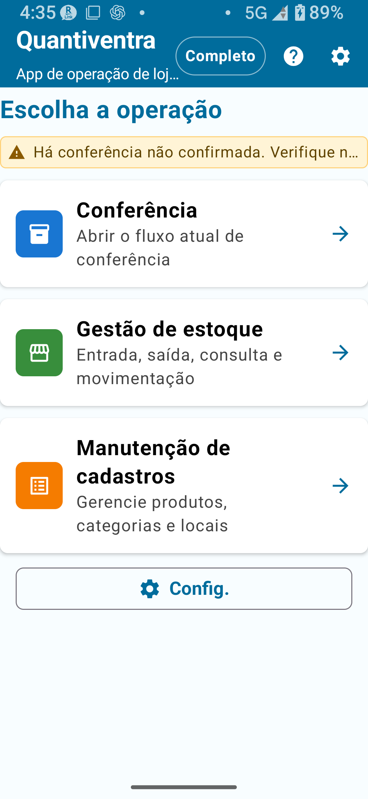
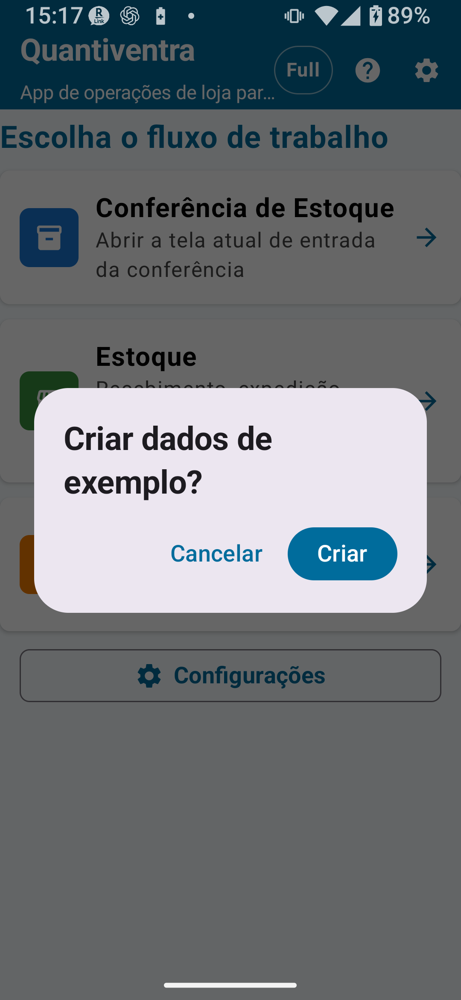

Visão geral do app, requisitos do sistema, configurações, permissões, planos, dados de exemplo, glossário e avisos legais
Escaneie o QR para abrir
Quantiventra (inventário físico e gestão de estoque)
Escaneie o código QR para abrir a página da loja ou toque no selo abaixo para acessar o Google Play.
Tópicos abordados nesta página: O que é o Quantiventra / Requisitos e permissões / Instalação e primeiro uso / Armazenamento de dados / Diferença entre inventário físico e gestão de estoque / Guia rápido / Tela inicial / Configurações / Idioma / Visão geral dos planos / Dados de exemplo / Solução de problemas / Glossário / Termos legais
CAPÍTULO 1
O que é o Quantiventra?
Quantiventra é a combinação de "Quantity" (quantidade) e "Inventory" (estoque/inventário). É um app Android que simplifica o inventário físico e a gestão de estoque por meio da leitura de códigos de barras com a câmera do smartphone.
Basta apontar a câmera para um código de barras para reconhecer o produto automaticamente, depois inserir e salvar a quantidade — um fluxo intuitivo que digitaliza a contagem feita em papel. Os resultados são salvos como arquivos CSV, fáceis de usar no Excel ou nas Planilhas Google.
As tarefas rotineiras de inventário físico, gestão de estoque, cadastros e importação/exportação de CSV podem ser realizadas no próprio dispositivo. Isso facilita registros e conferências em depósitos, lojas, áreas internas e locais de trabalho com conexão instável. Nas operações normais, os dados de trabalho são mantidos no dispositivo. Algumas funções, como verificação de compra, restauração de compras, links da loja ou links externos, podem exigir internet.

Fig. 1-1 Tela inicial do Quantiventra
Funcionalidades principais
📦 Contagem de estoque
Reconheça produtos rapidamente por leitura de código de barras e registre quantidades na hora. A calculadora integrada facilita a soma de contagens de múltiplas localizações.
🗂️ Gerenciamento de cadastros
Cadastre produtos, categorias e localizações como dados de referência. A importação em massa por CSV também é suportada.
📍 Gerenciamento de localizações
Cadastre múltiplas localizações de armazenamento como depósitos, lojas e prateleiras, e gerencie o estoque por localização. Você também pode configurar quais localizações são incluídas no cálculo de reposição.
📊 Importação/Exportação CSV
Exporte listas de estoque, backups e histórico em formato CSV para consolidar no Excel ou nas Planilhas Google.
🌐 Suporte multilíngue
Oferece suporte a 12 idiomas, incluindo português, inglês, japonês, chinês e coreano. Adapta-se automaticamente ao idioma do dispositivo.
⭐ Recursos da versão Completa
Remova limites de itens e desbloqueie gerenciamento detalhado de localizações, transferências de estoque, aplicação do inventário ao estoque e muito mais.
Como funciona a leitura pela câmera
Quando um código de barras estiver dentro do quadro guia (borda azul ou amarela) no centro da tela, o app confirma automaticamente após detectar o mesmo código em 3 quadros consecutivos. Esse mecanismo de tripla confirmação ajuda a evitar leituras incorretas e garante um reconhecimento mais confiável.
💡 Se o código não for reconhecidoO código de barras precisa estar completamente dentro do quadro guia. Códigos parcialmente fora do quadro não são detectados. Ajuste a posição da câmera até que o código esteja inteiramente dentro do quadro.
CAPÍTULO 2
Requisitos do sistema e permissões
Item
Requisito
Sistema operacional
Android 8.0 (Oreo / API 26) ou superior
Câmera
Câmera com foco automático (obrigatório)
Armazenamento
Mínimo de 10 MB de espaço livre no armazenamento interno (recomendado)
Permissões necessárias
Câmera (obrigatório)
Internet
Não necessário para tarefas rotineiras de inventário/estoque; verificação de compra, restauração, links da loja e links externos podem exigir internet.
Google Play Services
Necessário para compras e restauração de planos
💡 Permissão de armazenamentoO app salva os dados no armazenamento interno privado do app no Android. Não é necessária permissão de armazenamento. A troca de dados é feita pelas funções de importação, exportação e compartilhamento do app.
CAPÍTULO 3
Instalação e primeira execução
Pesquise "Quantiventra" no Google Play e toque em Instalar.
Toque no ícone do app para abri-lo. Quando aparecer a solicitação de permissão da câmera, toque em Permitir.
Se aparecer o prompt de dados de exemplo, escolha Criar ou Pular.
A pasta de dados do app é criada automaticamente no armazenamento interno.
Quando a Tela inicial aparecer, a configuração inicial está concluída.
⚠ Se a permissão da câmera for negadaA leitura de código de barras não estará disponível. Para reativar: Configurações → Apps → Quantiventra → Permissões → Câmera → Ativar.
Após trocar de dispositivo
No dispositivo antigo, exporte ou compartilhe os dados em Configurações → Exportar ou Configurações → Compartilhar.
No novo dispositivo, faça login com a mesma Conta Google.
Instale o Quantiventra pelo Google Play.
Use Configurações → Restaurar compras para restaurar os planos adquiridos.
Importe os CSVs de cadastro salvos por meio de Configurações → Importar CSV de cadastro.
🚨 Atenção ao desinstalarDesinstalar o app apaga todos os dados no armazenamento interno. Crie o hábito de fazer backups regulares via Exportar ou Compartilhar.
CAPÍTULO 4
Armazenamento de dados
Os dados do app são salvos na área privada do app no dispositivo. Não os edite diretamente por um gerenciador de arquivos. Use as funções de Compartilhamento e Exportação do app para acessar ou fazer backup dos dados.
Categoria
Conteúdo
Quando é atualizado
Dados de cadastro
Dados principais de produtos, categorias, localizações etc.
Quando um item é cadastrado, editado ou desativado
Histórico de inventário e estoque
Registros de inventários, entradas, saídas, transferências, importação CSV etc.
Quando um registro é salvo ou importado
Configurações do app
Idioma, leitura, regras de código, configurações de localização etc.
Quando as configurações mudam
Como abrir CSV no Excel
Os arquivos CSV são salvos em UTF-8. Para abri-los no Excel, recomenda-se o procedimento abaixo.
Abra o Excel e selecione Dados → De Texto/CSV.
Selecione o arquivo CSV.
Escolha Unicode (UTF-8) como codificação.
Clique em Carregar.
⚠ Não abra o CSV com duplo cliqueAbrir o arquivo diretamente com duplo clique pode causar caracteres corrompidos. Importe-o pela guia Dados.
Procedimento de backup recomendado
Toque em Configurações → Exportar (Escolher pasta).
Crie e selecione uma pasta de backup na pasta Documentos do dispositivo, ex.: Quantiventra_backup_20250401.
O backup está concluído quando os arquivos CSV do histórico e dos dados de cadastro forem salvos.
Para maior segurança, copie os arquivos para o PC via Google Drive ou cabo USB.
CAPÍTULO 5
Inventário físico e Gestão de estoque
Item
Inventário físico
Gestão de estoque
Finalidade
Contar e registrar quantidades reais
Rastrear variações de estoque por entrada, saída e transferência
Fluxo de trabalho
Leitura → Inserção da quantidade → Salvar → Confirmar
Entrada/Saída/Transferência → Salvar → Ver histórico
Uso comum
Inventários mensais, inventários de fim de ano, verificações pontuais
Gerenciamento diário de entradas, saídas e transferências
Impacto no estoque
Aplicado ao estoque após confirmação (versão Completa)
Refletido imediatamente a cada operação
Telas correspondentes
Tela de inventário físico e histórico de inventário
Consulta de estoque, entrada, saída, transferência e histórico de estoque
⚠ AtençãoO inventário físico e a gestão de estoque são módulos separados. Inserir quantidades no inventário não altera o estoque, a menos que a operação "Aplicar ao estoque" seja executada (funcionalidade da versão Completa). Não confunda os dois módulos.
CAPÍTULO 6
Guia rápido para novos usuários
Passo 1: Experimente com os dados de exemplo
Abra o app; se aparecer o prompt para criar dados de exemplo, escolha Criar.
Na Tela inicial, abra Gestão de estoque e verifique os níveis de estoque de exemplo.
Abra Inventário físico e experimente ler um código de barras e inserir uma quantidade.
Experimente exportar um arquivo CSV.
Antes de começar as operações reais, exclua os dados de exemplo (na tela Configurações).
Passo 2: Cadastre os produtos
Na Tela inicial, abra Gerenciamento de cadastros.
Vá em Cadastro de produtos, crie um novo item e insira o código e o nome do produto.
Defina categoria, preço e ponto de reposição se necessário.
Cadastre depósitos, lojas etc. em Cadastro de localizações (recomendado para versão Padrão ou superior).
💡 DicaRecomenda-se praticar com os dados de exemplo antes de inserir dados reais de produtos.
CAPÍTULO 7
Tela inicial
Ponto de acesso
Descrição
Inventário físico
Abre a tela de inventário para ler produtos e registrar as quantidades reais
Gestão de estoque
Acessa consulta de estoque, entrada, saída, transferência e histórico de estoque
Gerenciamento de cadastros
Gerencia dados de cadastro de produtos, categorias e localizações
Configurações
Idioma, configurações de inventário, CSV, dados de exemplo, compras de planos, documentos legais etc.
Ajuda
Abre o manual ou a página de ajuda
⚠ AtençãoExecutar operações de Gestão de estoque com dados de inventário não confirmados pode causar inconsistências. Recomenda-se concluir o inventário antes de fazer alterações no estoque.
CAPÍTULO 8
Tela de Configurações
Fig. 8-1 Tela principal de Configurações
Importação / Exportação de dados
Operação
Descrição
Disponível em
Importar CSV de cadastro
Carrega um arquivo CSV externo como dados de cadastro (sobrescreve os dados existentes)
Todos os planos
Compartilhar (e-mail etc.)
Envia os CSVs de histórico e cadastro para outros apps
Todos os planos
Exportar (Escolher pasta)
Salva os CSVs de histórico e cadastro na pasta selecionada
Todos os planos
Limpar todo o histórico
Exclui e reinicia todo o histórico de leituras
Todos os planos (irreversível)
Zerar totais do cadastro
Redefine todos os totais acumulados registrados para 0
Desbloqueio Completo (irreversível)
Configurações comuns
Configuração
Descrição
Plano
Idioma de exibição
Seleciona o idioma exibido no app
Todos os planos (alguns idiomas exigem desbloqueio)
Bloqueio de rotação de tela
Mantém a orientação da tela fixa mesmo ao inclinar o dispositivo
Plano Padrão ou superior
Criar dados de exemplo
Cria dados de prática
Todos os planos
Excluir dados de exemplo
Remove os dados de exemplo em lote
Todos os planos
Restaurar compras
Restaura planos comprados pelo Google Play
Todos os planos
Documentos legais
Exibe termos de uso, política de privacidade etc.
Todos os planos
Modo de inventário
Modo
Descrição
Localizações disponíveis
Detalhado
Usa todas as localizações cadastradas no Cadastro de localizações
Todas as localizações cadastradas
Simples A
Inventário somente com o depósito
Apenas depósito
Simples B
Inventário com depósito e loja
Depósito + Loja
Simples C
Inventário somente com a loja
Apenas loja
⚠ AtençãoMesmo com o Desbloqueio Completo ativo, se o modo ainda estiver configurado como Simples A/B/C, você verá apenas as opções de localização simples. Mude para o modo Detalhado para usar localizações detalhadas.
Configurações de leitura da câmera (Plano Completo)
Define os tipos de código lidos para produtos e localizações. Desativar tipos desnecessários ajuda a reduzir leituras incorretas.
Tipo
Padrão (produto)
Padrão (localização)
Uso comum
CODE39
✓ ON
✓ ON
Peças industriais e códigos internos
CODE128
✓ ON
✓ ON
Códigos logísticos
EAN13
✓ ON
✓ ON
Produtos comerciais
QRCODE
✓ ON
✓ ON
QR codes de produtos e localizações
Regras de código / regras de localização (Plano Completo)
Permite configurar tipo de caracteres, tamanho mínimo e máximo de códigos internos, tamanho máximo de códigos de localização e outras regras.
Restaurar compras
Restaura planos já comprados no Google Play. Se o plano não for refletido, verifique a Conta Google usada na compra e a conexão com a internet.
🚨 Limpar histórico / Zerar totais são irreversíveis"Limpar todo o histórico" e "Zerar totais do cadastro" não podem ser desfeitos. Antes de executá-los, sempre faça backup via Exportar.
CAPÍTULO 9
Configuração de idioma
Configuração de idioma
Você pode selecionar o idioma de exibição do app em Configurações → Idioma. No primeiro uso, o app usa o idioma principal do dispositivo como referência inicial e inicia nesse idioma quando ele é compatível. Essa detecção é apenas um comportamento interno; não há uma opção visível separada para esse comportamento na tela de idioma.
Idiomas suportados (12)
Código
Idioma
Gratuito
Desbloqueio de todos os idiomas
ja
Japonês
✓
✓
en
Inglês
✓
✓
zh
Chinês simplificado
Somente se for o idioma principal do dispositivo
✓
tw
Chinês tradicional
Somente se for o idioma principal do dispositivo
✓
ko
Coreano
Somente se for o idioma principal do dispositivo
✓
hi
Hindi
Somente se for o idioma principal do dispositivo
✓
vi
Vietnamita
Somente se for o idioma principal do dispositivo
✓
it
Italiano
Somente se for o idioma principal do dispositivo
✓
pt-BR
Português (Brasil)
Somente se for o idioma principal do dispositivo
✓
es-419
Espanhol (América Latina)
Somente se for o idioma principal do dispositivo
✓
id
Indonésio
Somente se for o idioma principal do dispositivo
✓
th
Tailandês
Somente se for o idioma principal do dispositivo
✓
💡 Sobre a detecção automática de idiomaA detecção automática define apenas o idioma inicial. Depois disso, o idioma selecionado manualmente no app tem prioridade. Se o idioma principal do dispositivo não for compatível, o app usa o inglês como fallback.
⚠ AtençãoPara textos legais, compras e condições de venda, priorize sempre as informações exibidas nas telas do app e na página do Google Play.
CAPÍTULO 10
Visão geral dos planos
🚨 ImportantePreços, impostos, condições de compra e condições de reembolso são determinados pelo conteúdo exibido no Google Play — este manual não faz afirmações definitivas. Sempre verifique a listagem no Google Play antes de comprar.
Comparação de funcionalidades
Funcionalidade / Limite
Gratuito
Inventário físico: padrão
Inventário físico: completo
Gestão de estoque: padrão
Gestão de estoque: completa
Registros de cadastro
Máx. 30
Máx. 300
Ilimitado
Máx. 300
Ilimitado
Registros de histórico
Máx. 30
Máx. 1.000
Ilimitado
Máx. 1.000
Ilimitado
Registros exportados
Máx. 30
Máx. 300
Ilimitado
Máx. 300
Ilimitado
Bloqueio de rotação de tela
✗
✓
✓
✓
✓
Regras de código/localização detalhadas
✗
✗
✓
✗
✓
Exportação CSV expandida
✗
✗
✓
✗
✓
Transferência de estoque e aplicação de inventário
✗
✗
✗
✗
✓
Todos os 12 idiomas
✗
Compre o Desbloqueio de todos os idiomas separadamente
Pacotes e desbloqueio de todos os idiomas
Plano
Conteúdo
Pacote Padrão
Inventário físico Padrão + Gestão de estoque Padrão
Pacote Completo
Inventário físico Completo + Gestão de estoque Completa
Desbloqueio de todos os idiomas
Permite usar os 10 idiomas além de japonês e inglês
Como comprar um plano
Toque em Configurações → Planos ou no botão de compra.
A tela de compra do Google Play será aberta.
Após concluir o pagamento, o plano é ativado imediatamente.
Restaurar compras após trocar de dispositivo
Faça login no novo dispositivo com a mesma Conta Google.
Instale e abra o app.
Toque em Configurações → Restaurar compras.
Quando a compra for confirmada, o plano será ativado.
Informações de compra no Google PlayOs botões de compra exibem as informações fornecidas pelo Google Play. Consulte o preço, a disponibilidade e as condições de reembolso diretamente no Google Play.
CAPÍTULO 11
Dados de exemplo
Os dados de exemplo são dados de prática para explorar o Quantiventra antes de iniciar as operações reais. Incluem cerca de 10 produtos de exemplo, categorias de exemplo e as localizações básicas "Depósito" e "Loja".

Fig. 11-1 Prompt de criação de dados de exemplo
Conteúdo dos dados de exemplo
Cerca de 10 produtos de exemplo
Categorias de exemplo
Localizações básicas “Depósito” e “Loja”
Estoque e histórico de inventário de exemplo
Criar dados de exemplo
No primeiro uso, se o prompt aparecer, escolha Criar.
Alternativamente, vá em Configurações → Criar dados de exemplo.
Excluir dados de exemplo
Vá em Configurações → Excluir dados de exemplo.
Revise o que será excluído (produtos, estoque, categorias e histórico de inventário de exemplo).
Confirme e execute a exclusão.
🚨 ImportanteSempre exclua os dados de exemplo antes de iniciar as operações reais. Verifique se não há dados reais misturados antes de excluir.
CAPÍTULO 12
Solução de problemas
O código de barras não é lido / A câmera não responde
Verifique se o interruptor da câmera (canto superior direito) está ativado.
O código de barras precisa estar completamente dentro do quadro guia — códigos fora do quadro não são detectados.
Nas Configurações (Desbloqueio Completo), verifique se o tipo de leitura (CODE39, EAN13 etc.) corresponde ao código que você está lendo.
Se o código de barras estiver danificado ou sujo, use a entrada manual.
O nome do produto não aparece após importar o CSV de cadastro
Confirme que o CSV está codificado em UTF-8 (Shift-JIS causará caracteres corrompidos).
Verifique se a linha de cabeçalho corresponde ao formato exigido: barcode,name,theoretical_stock,actual_stock_total
Se o nome do produto contiver vírgulas, coloque-o entre aspas: ex. "Parafuso M6, inox"
As funcionalidades do plano comprado não estão disponíveis
Toque em Configurações → Restaurar compras.
Verifique se você está logado com a conta Google usada para a compra.
Verifique a conexão com a internet e tente novamente (a verificação da compra requer rede).
Os dados sumiram após trocar de dispositivo
Os dados são salvos no armazenamento interno do app e se perdem ao desinstalar ou trocar de dispositivo.
Recomenda-se fortemente fazer backups regulares via Exportar ou Compartilhar.
Se você tem um backup, pode restaurá-lo via Importar CSV de cadastro.
CAPÍTULO 13
Glossário
Termo
Definição
Inventário físico
Operação de contagem e registro das quantidades reais de mercadorias no local
Quantidade real
Quantidade efetivamente contada no local
Estoque teórico
Quantidade de estoque calculada pelo sistema
Diferença / Variação de inventário
Diferença entre a quantidade real e o estoque teórico
Produto
Item individual que possui estoque
Categoria
Grupo usado para classificar produtos
Localização
Local onde o estoque é armazenado (ex.: depósito, loja, prateleira)
Incluir no cálculo de reposição
Configuração que permite que o estoque dessa localização seja incluído no total usado para decisões de reposição
Estoque / Quantidade disponível
Quantidade atualmente disponível
Entrada (recebimento)
Operação que aumenta o estoque
Saída (expedição)
Operação que reduz o estoque
Transferência de estoque
Mover estoque de uma localização para outra (versão Completa)
Histórico de estoque
Log de operações de entrada, saída, transferência e ajuste de inventário
Ponto de reposição
Quantidade de referência para determinar quando o estoque está baixo
Código do produto
Código interno usado para identificar um produto
Total acumulado registrado
Soma acumulada de quantidades salvas até o momento
CSV
Arquivo de texto delimitado por vírgulas, que pode ser aberto em apps de planilha
Backup
Dados salvos para restauração ou consulta
Substituir estoque atual
Modo de importação CSV em que as quantidades no arquivo tornam-se o novo estoque atual
Adicionar como entrada
Modo de importação CSV em que as quantidades no arquivo são adicionadas ao estoque atual como entrada
Confirmar contagem real
Operação que finaliza os resultados do inventário físico (versão Completa)
Dados de cadastro
Banco de dados que gerencia os registros principais de produtos, categorias e localizações
CAPÍTULO 14
Termos e isenções de responsabilidade
■ Termos de uso
Ao baixar ou usar este app, você concorda com os termos a seguir. O uso deste app para gerenciamento de inventário e estoque é permitido para uso pessoal e empresarial. É proibida a engenharia reversa, descompilação, modificação ou redistribuição do app.
Dados do usuário: Todos os dados gerados por este app (CSV de cadastro, CSV de histórico e arquivos de configuração) são armazenados exclusivamente no dispositivo do usuário e não são transmitidos a nenhum servidor externo (exceto as comunicações com o Google Play necessárias para verificação de compras de planos).
Compra de planos: Todas as compras de planos são processadas pelo sistema de pagamento do Google Play. Os reembolsos seguem a política de reembolso do Google Play.
■ Isenção de responsabilidade
Este app é fornecido "no estado em que se encontra". O Desenvolvedor não é responsável por quaisquer danos decorrentes do uso ou da impossibilidade de uso do app, incluindo perda de dados, interrupção dos negócios ou outros danos diretos ou indiretos.
Os usuários são responsáveis por verificar a precisão e a completude dos dados CSV gerados por este app. O Desenvolvedor não é responsável por inconsistências de dados causadas por erros de leitura ou de entrada.
■ Política de privacidade
Este app não coleta, transmite nem usa nenhuma informação pessoal. A câmera é usada exclusivamente para leitura de códigos de barras e códigos QR. Nenhum vídeo é gravado ou armazenado.
Estes termos podem ser alterados sem aviso prévio. Os termos atualizados entram em vigor quando publicados no Google Play ou na notificação dentro do app.
Leitura de códigos: A precisão da leitura depende da câmera do dispositivo, da condição do código e do ambiente. Se a leitura falhar, use a entrada manual.
📌 Pontos-chave do capítulo
Quantiventra = Quantity + Inventory. A confirmação ocorre após 3 quadros consecutivos com o mesmo código, evitando leituras incorretas.
Requer Android 8.0+ e câmera com foco automático. Não precisa de permissão de armazenamento. As tarefas rotineiras podem ser realizadas no dispositivo; compras, restauração, links da loja e links externos podem exigir internet.
Os dados ficam no armazenamento interno do app — a desinstalação apaga tudo. Faça backups regulares via Exportar.
Inventário físico e Gestão de estoque são módulos separados — inserir quantidades no inventário não altera o estoque até a confirmação.
Antes de iniciar as operações reais, pratique com os dados de exemplo e depois exclua-os.
Para preços dos planos, consulte o Google Play — este manual não faz afirmações definitivas.
Antes de operações de grande impacto (substituição CSV, aplicação de inventário, exclusão, reset) sempre faça backup.
Antes de usar
Antes de usar o app, confira os detalhes atuais dos planos e as condições de compra no app e no Google Play.
Preços dos planos, impostos e condições de reembolso (verificar no Google Play)
Idiomas específicos disponíveis no Plano Gratuito
Use as configurações de leitura de código do produto para produtos e as regras de código de localização para localizações; não misture as duas.